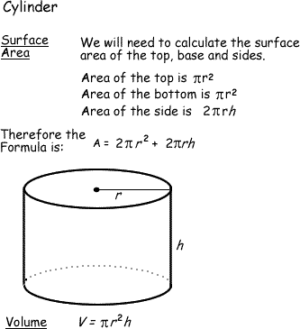

POLJA ALI TABELE
-
PRIMER: IZRAÈUN PROSTORNINE IN POVRŠINE VALJA
- "Zapiši program, ki bo izraèunal prostornino in površino valja, za katerega poznamo polmer osnovne ploskve "r" in višino "h". Ob zagonu naj te program pozove k vnosu polmera "r" in višine "h", potem pa se v pogovornem oknu najprej izpiše prostornina valja za podane podatke in nato še površina tega valja. Oba rezultata naj se izpišeta tudi v interaktivnem oknu."
- Potek reševanja problema poskusimo premisliti èim bolj natanèno.
- Deklariraj štiri spremenljivke: r, h, V in A.
- Uporabi pozivno okno, ki pozove uporabnika k vnosu polmera "r".
- Uporabi pozivno okno, ki pozove uporabnika k vnosu višine "h".
- Zapiši blok ukazov, ki bo izraèunal vrednost prostornine valja "V". Enaèbo za izraèun prostornine valja poišèi na sliki. Pri pisanju enaèbe si pomagaj z ustreznimi primeri iz prejšnjih uènih enot. Za Ludolfovo število poišèi ustrezno funkcijo oziroma metodo v eni od prejšnjih uènih enot. Za izraèun vrednosti potence prav tako poišèi ustrezno metodo v eni od vaj, ki si jih že izdelal/a.
- Zapiši blok ukazov, ki bo izraèunal vrednost površine "A" valja. Enaèbo za izraèun površine valja poišèi na sliki. Pri pisanju enaèbe si pomagaj z ustreznimi primeri iz prejšnjih uènih enot. Za Ludolfovo število poišèi ustrezno funkcijo oziroma metodo v eni od prejšnjih uènih enot. Za izraèun vrednosti potence prav tako poišèi ustrezno metodo v eni od vaj, ki si jih že izdelal/a.
- Uporabi pozivno okno, ki izpiše izraèunano prostornino valja "V".
- Uporabi pozivno okno, ki izpiše izraèunano površino valja "A".
- Izraèunana prostornina valja "V" in izraèunana površina valja "A" naj se izpišeta še v interaktivnem oknu.
VAJA 53:
- V okolju za pisanje izvorne kode v jeziku Java, za prevajanje in za interaktivno delo zapiši program "Valj". Pomagaj si z navodili za izvedbo vaje, ki jih najdeš v zgornji toèki "Primer:" in s sliko, ki ilustrira problem naloge.
- Izvorno kodo shrani pod imenom "ImePriimek53.java". ImePriimek je seveda tvoje lastno ime in priimek.
- Datoteko "ImePriimek53.java" prevedi.
- Prevedeno datoteko zaženi, preveri rezultat v interaktivnem oknu in poklièi profesorja, da vidi rezultat.
- Sam/a skonstruiraj diagram poteka v tej uèni enoti in ga nariši v zvezek.
1. Vprašanja:
1.
2.
3.
4.
5.
6.
7.
8.
9.
10.
2. Zapiši od ene do pet kljuènih besed, ki povzemajo vsebino te uène enote.
3. Povezave do dodatnih informacij.
Gradiva na spletnih straneh fakultete za matematiko in fiziko v Ljubljani.
Spletni priroènik proizvajalca programskega okolja Java. To je podjetje Sun.
|